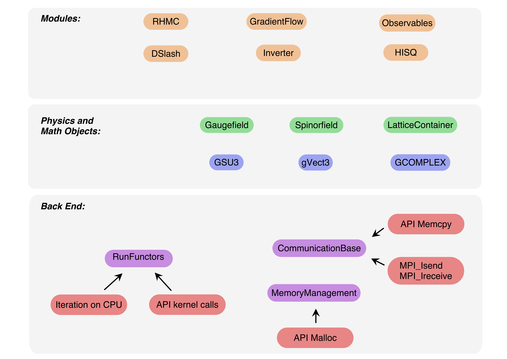

General structure of the code
A schematic overview of the code structure for SIMULATeQCD is shown in the image below:

Splitting the lattice into sublattices, indexing, and communication procedures make up the foundation of our code, together with classes that manage the allocation of dynamic memory, file input/output, logging, and common math operations. Physics and mathematics objects inherit from this backend and heavily utilize the functor syntax. At the highest organizational level are the modules, which are constructed from these physics and mathematics objects. At this highest level, we try to write code that closely and obviously mimics mathematical formulas or short, descriptive sentences.
The base folder includes everything at the lowest level of the hierarchy, along with the
basic math objects. Gauge field and spinor field classes get their own folders,
gauge and spinor, respectively. Any new object that should be built out of these basic
objects, for example a new observable, should be placed in the modules folder.
Whatever you write should have a corresponding test in the testing folder.
Main applications go in the applications folder.
The tools folder is for any auxiliary programs needed to run one of the applications.
In our examples folder we have short programs to demonstrate how to write code
in our style and according to our paradigm.
How to organize new files
All source and header files are stored in src/<MeaningfulName>/.... For example, src/base/* holds
source files of all base classes which are needed by most programs, e.g. the Lattice class or
the CommunicationBase class.
If you want to add a new executable, be it an application, a test, a profiler, etc., you should
save it as src/<type_of_application>/main_<exec_name>.cpp.
If you have added additional *.cpp or header files which are needed by your main, you should save
them in a new module folder, e.g. src/modules/<exec_name>/<meaningfulName>.cpp and add them to the source files
list in CMakeLists.txt (root folder):
# If your `*cpp` files contain device code, you need to specify them with this call
set_SIMULATeQCD_gpu_backend(<path/to/file1.cpp> <path/to/file2.cpp>)
# With this call you define the name of your executable.
# You also need to specify all your `*cpp` files
set(SOURCE_FILES_<exec_name> <path/to/file1.cpp> <path/to/file2.cpp>)
add_SIMULATeQCD_executable(<exec_name> src/<type_of_application>/main_<exec_name>.cpp
${SOURCE_FILES_<exec_name>})
# Here you specify the type of application. Available types are:
# "testing", "profiling", "examples", "applications", "tools"
set_SIMULATeQCD_property(<exec_name> PROPERTIES RUNTIME_OUTPUT_DIRECTORY "<type_of_application>")
# Add the `HaloDepth` and precision which you want to use in you application.
# Available definitions are written in `define.h`.
SIMULATeQCD_target_compile_definitions(<exec_name> PRIVATE <your_compile_definitions>)
# Add your executable to the correct compound. Available types are (similar as before):
# tests, profilers, examples, applications, tools.
add_to_compound_SIMULATeQCD_target(<type_of_application> <exec_name>)
Header files should NOT be listed there!
Example programs are stored in
src/examples/*. Ideally, these programs should be as short as possible and strongly commented.Testing programs are stored in
src/testing/*. These programs should check if everything works properly. Please make sure that your tests return a clear pass/fail message.
An example configuration is stored in test_conf/l20t20b06498a_nersc.302500. It is a \(20^4\) lattice with a \(\beta=0.638\) and it is written in the NERSC format.
Nice examples on how to write SIMULATeQCD code may be found in
src/examples/main_plaquette.cpp
or
src/testing/main_GeneralOperatorTest.cpp.